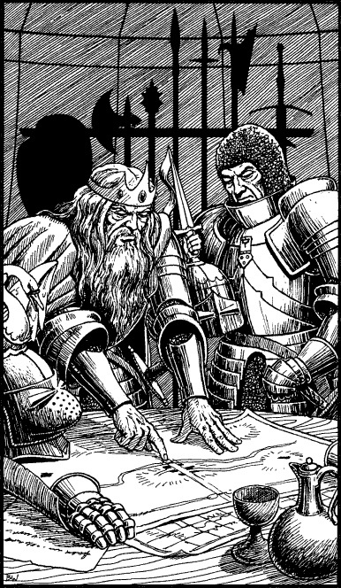

244
In the company of a dozen bodyguards and court heralds, you follow the Prince as he makes his way on foot to King Sarnac’s camp. It is his usual practice to inspect his soldiers on the eve of battle, to see for himself that all is well and to raise their spirits with a few words of praise and encouragement. He is heartened to discover their morale is already high and that they are all confident that he will lead them to victory.
At length you arrive at the Lencian headquarters. A huge yellow flag, bearing the emblem of a white swan and blue dragon, flutters in the breeze above the royal tent where a unit of silver-clad knights stands stiffly to attention. A trumpet announces your arrival and the knights escort you inside to meet the King. After formal greetings have been exchanged, the grey-haired King begins to discuss the impending battle. The Prince has brought with him a detailed map of the town and, as the two leaders formulate their plans, it is used to mark the places where their regiments will assemble and attack the enemy.

‘If only we knew the number of reinforcements Baron Shinzar has received,’ says the King, uneasily. ‘Then we could be sure our plans would succeed.’ The Prince nods in agreement. ‘We must send a scout to reconnoitre their defences, or hundreds of our soldiers could lose their lives needlessly in the assault.’
The King looks in your direction then returns his eyes to the Prince. ‘I have no scouts trained for such a delicate operation,’ he says, ‘but I see you have a Pathfinder. Send him. His skills would be well suited to this task.’
The Prince hesitates. He cannot reasonably refuse the King’s suggestion, yet to send you into the enemy camp would endanger your life and your quest.
If you wish to volunteer to scout the enemy positions, turn to 53.
If you choose to remain silent, turn to 171.